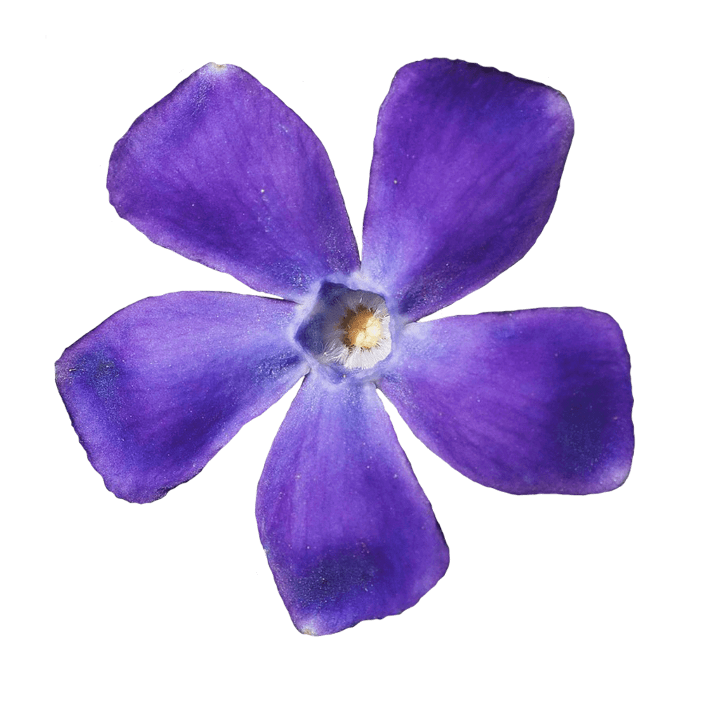

Vidaloka is a Didone display typeface for headlines and short blocks of text.
The main features are curlified drops and sloped terminals. Tail of Q has a distinctive baroque inspired form.
Vidaloka is designed by Alexei Vanyashin and Olga Karpushina.
Font available from Google Fonts.
Vinca Minor, the “dwarf periwinkle”, is one of the groundcovers. In general, however, the plant is also referred to as “lesser periwinkle” or “myrtle”. With its long stolons it covers even large areas and forms beautiful, blue-violet flowers. The plant is not only available in blue-violet, but also in many other colours.
Victorian flower language users assigned it the meaning of a beautifully blossoming friendship. It also means sharing the recollection of a pleasant memory from the past. In the Ukraine, it's tied to folklore about love that lasts through the eternity.